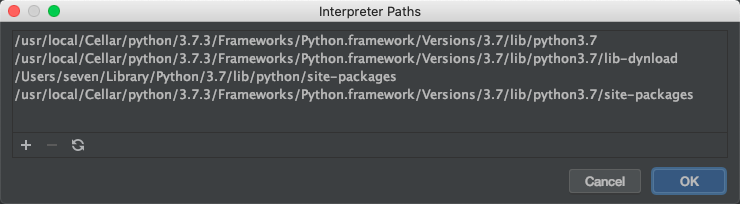

mac中python的安装目录
1、python3.7的安装目录
被安装在“usr/local/Cellar”目录下
1 | /usr/local/Cellar/python/3.7.3/Frameworks/Python.framework/Versions/3.7 |
相应的，其pip等插件被安装在
1 | /usr/local/Cellar/python/3.7.3/Frameworks/Python.framework/Versions/3.7/bin/pip |
同被安装在Cellar目录下的应用还有：yara、ruby、tree、ldid、等

2、python2.7的安装目录
1 | /System/Library/Frameworks/Python.framework/Versions/2.7 |
但pip工具被安装在了目录
1 | ~/Library/Python/2.7/lib/python/site-packages/pip |
同被安装在该“site-packages”目录下的有很多第三方模块，如“pefile.py”、”magic.py”、“pyspider”、“scrapy”、“pyecharts”等
另其他一些第三方库，如“bs4”、“requests”等被安装在如下路径
1 | /Library/Python/2.7/site-packages |